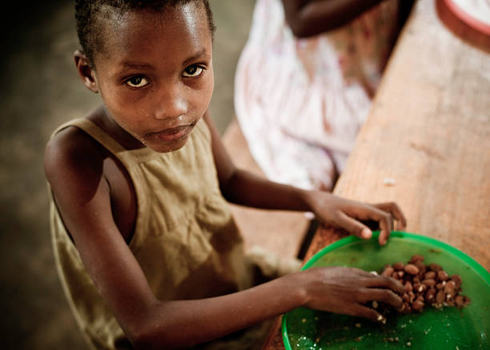

Falta de Alimento na mesa Do Brasileiro Após uma forte onda de pandemia no mundo, o aumento da fome no Brasil cresceu abruptamente, fazendo com que a população brasileira não tenha em sua mesa uma refeição digna. A população de renda baixa, não consegue se quer colocar em sua mesa o mínimo para que possa garantir o sustendo de um único dia. Mas ainda tem aquela que nem renda tem, trazendo assim a total miséria. O fato de uma doença ser espalhada rapidamente pelo mundo, levou muitas pessoas a perderem seu entes queridos, mas as perdas não foram só com vidas, mas também com Empregos. Mas além disso, as questões sociais, e econômicas e políticas, são as principais causas de fome no Brasil. A desigualdade social, a pobreza e as crises (políticas, econômicas e sanitárias), são destacadas seguindo de uma má distribuição de alimentos. Pesquisas feitas pelo site GOV. A fome no Brasil piorou nos últimos três anos. Relatório da ONU (Organizações das Nações Unidas), para a Alimentação e a Agricultura (FAO), confirmou a piora da insegurança alimentar e da fome no Brasil. No ano de 2022, eram relatados 70,3 milhões de pessoas que vivem de insegurança alimentar moderada, mas também eram relatados 21,1 milhões de pessoas por insegurança alimentar grave. Com base em relatórios que mostram o quão grave é a situação, foi criado projeto para acabar com a fome. |
Transformando a Fome em um Belo Sorriso Para que todos possam ter uma refeição digna, em sua mesa, o governo teria que começar a defender mais os interesses daquela que realmente
são necessitados. Aqueles de renda baixa ou que na verdade não possui nenhuma renda.
Começando por empregar a todos.
Afinal com ajudas de custos como bolsa família, tem sido mostrado que não é o suficiente, levando em consideração que ir ao supermercado tem se tornado
quase que impossível com a aumento de valores.
E ainda tem muitas famílias que nem bolsa família recebem e vivem em total miséria.
Algumas Ongs e pessoa, tentam ajudar com doações de sextas básicas, mas é uma solução temporária. Oque significa que essas famílias iram precisar sempre.
O ideal seria arrumar soluções que permaneçam, viáveis e que determinem a sobrevivência. Trazendo sempre um alimento de qualidade na mesa de todos.
Para que todos possam ter uma refeição digna, em sua mesa, o governo teria que começar a defender mais os interesses daquela que realmente
são necessitados. Aqueles de renda baixa ou que na verdade não possui nenhuma renda.
Começando por empregar a todos.
Afinal com ajudas de custos como bolsa família, tem sido mostrado que não é o suficiente, levando em consideração que ir ao supermercado tem se tornado
quase que impossível com a aumento de valores.
E ainda tem muitas famílias que nem bolsa família recebem e vivem em total miséria.
Algumas Ongs e pessoa, tentam ajudar com doações de sextas básicas, mas é uma solução temporária. Oque significa que essas famílias iram precisar sempre.
O ideal seria arrumar soluções que permaneçam, viáveis e que determinem a sobrevivência. Trazendo sempre um alimento de qualidade na mesa de todos.
|

Nos últimos anos, temos assistido a um movimento de conscientização das pessoas em relação à importância de uma alimentação mais responsável. Muitas delas estão preferindo alimentos que tenham sido produzidos de forma respeitosa com o meio ambiente. Nesse cenário, a agricultura sustentável ganha um espaço especial.
Ao contrário do que muitos pensam, ela não foca apenas a minimização dos impactos ambientais, em detrimento dos ganhos financeiros. Seu objetivo é, justamente, equilibrar essas variáveis para que tanto o produtor quanto o meio ambiente ganhem com isso.
Trata-se de um conceito e de uma prática que prioriza o respeito ao meio ambiente e a justiça, do ponto de vista social — e procura ser economicamente viável para o produtor. Portanto, ela equilibra os três pilares do desenvolvimento sustentável: economia, sociedade e meio ambiente.
A sustentabilidade, em si, tem o seu conceito pautado na possibilidade de mantermos nossa qualidade de vida, sem que isso impacte as gerações futuras. Em outras palavras, nós precisamos deixar para nossos filhos, netos e bisnetos um planeta produtivo, uma terra fértil e uma atmosfera limpa.

Os benefícios gerados por uma agricultura sustentável são diversos em todas as esferas de desenvolvimento.
Os principais deles estão relacionados à preservação dos ciclos naturais da terra, da água e do ar, o que garante que as próximas gerações tenham um futuro rico em recursos, tais como nossos pais e avôs tiveram.
A redução do impacto ambiental e o uso racional dos recursos disponíveis é também uma forma de manter a existência do agronegócio no Brasil e no mundo. Afinal, sem estratégias eficientes de recuperação do solo e da água, além do uso desmedido de agrotóxicos, a terra vai perdendo a sua capacidade de dar frutos nutritivos e seguros, além de ficar exposta a muitos problemas relacionados ao clima
Nos vídeos abaixo iremos conhecer as Aventuras de Nina.
Nina vai contar e explicar sobre Fome Zero e Agricultura Sustentável, com ela veremos o quão importante são essas questões.
Nina também irá nos apresentar soluções para que possamos praticar e mudar o contexto do histórico de fome e má preservação do meio ambiente.
Fique com a Nina e veja os vídeos até o final, ela sabe muito e pode nos ensinar a viver em um mundo muito melhor.
Faça parte desse projeto
De sua opinião e nos diga o que mais podemos fazer para Combater a Fome e cuidar do meio ambiente de forma Sustentável.
Nome:
Idade:
E-mail:
Cidade/Estado:
Sou alguém que esta inteiramente se dedicando a aprender.